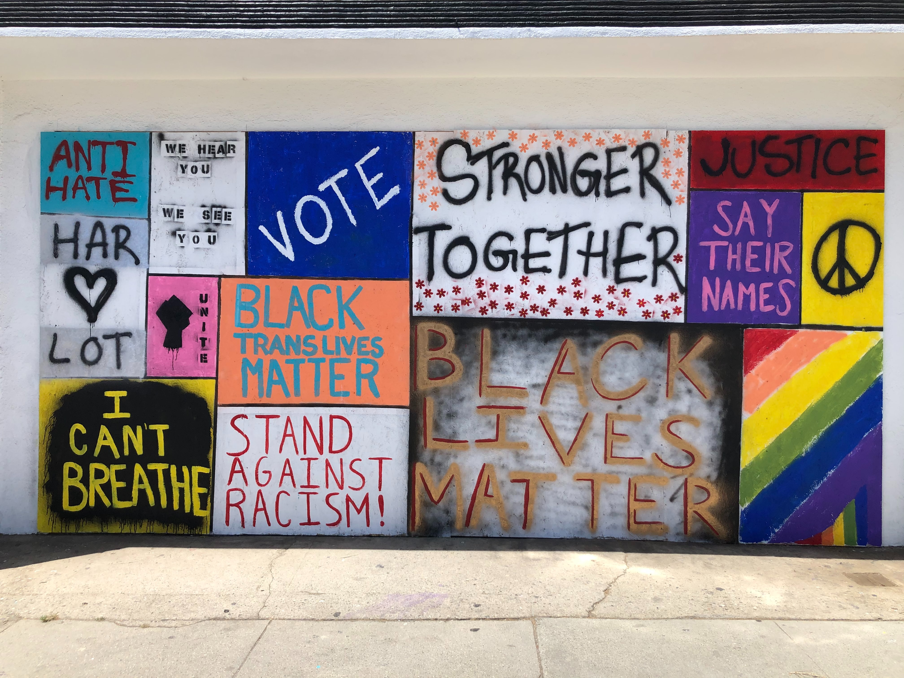

It is said that when White people get a cold, Black people get pneumonia. History–and our present day–has borne
that out. But where does this inequality stem from? Well, the common denominator is racism. From how White
colonizers relied on
completely false suppositions of Black people’s pain tolerance to justify slavery, to the
fact that even today, doctors
provide unequal treatment to Black patients due to pervading
racial biases,
medical racism has quite literally taken millions of lives and
livelihoods.
Ultimately, these racist beliefs have built a broader racist system that perpetuates itself in so many
ways. White opioid users have been treated much
more sympathetically by the media–and consequently through policy–than Black and Latino
heroin users. Communities of color suffer from a
scarcity of
doctors & hospitals while toxic facilities, the product of historical zoning discrimination, litter their
neighborhoods. Relatively weak means of
resisting corporate interests leave residents of these communities with worse-off hospital
systems and factories
spewing unhealthy toxins in the air. Brutalistic and racist police forces
disproportionately criminalize and punish people of
color–especially Black people–naturally resulting in outsized and generational mental and physical harm.
<<<<<<< Updated upstream
The confluence of these and many more factors leads us to today, when communities of color
are being
disproportionately impacted by the COVID-19 crisis. When communities have historically been
underfunded, given unequal
medical care & political attention, and have factories that spew toxins that contribute to respiratory diseases
such as asthma, it is no surprise that these communities would consequently face higher risks to a respiratory
virus.
=======
The confluence of these and many more factors leads us to today, when communities of color are being
disproportionately impacted by the COVID-19 crisis. When communities have historically been underfunded, given unequal
medical care & political attention, and have factories that spew toxins that contribute to respiratory diseases such as asthma, it is no surprise that these communities would consequently face higher risks to a respiratory virus.

>>>>>>> Stashed changes
Given the devastating impacts of systemic racism in health outcomes, we have to commit to
being anti-racist. Proclaiming ourselves as “not racist,” means nothing, as it promises no action to overturn our
own potential
racist biases, let alone our harmful racist structures. Moreover, we can’t just work to overturn racist or unequal
structures, we must also foster new cooperation and egalitarianism: a system of true social–and therefore
medical–justice. This
spirit is fostered both through the on-the-ground
action we can take, and
the broader collectivist projects we pursue–like the
Pandemic Testing Board.
We demand that
our broader policy goals align with the visions outlined by the Movement for Black Lives’
National Demands for
COVID-19.